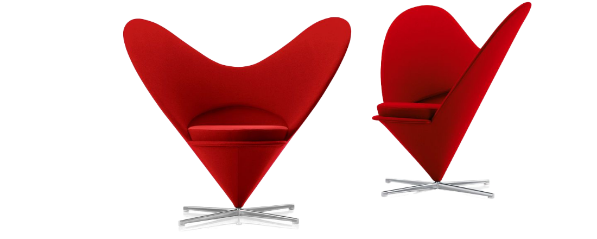
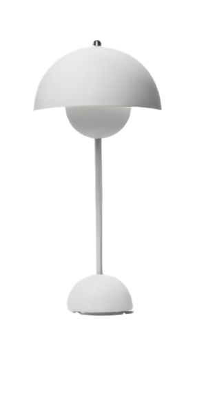

Panton 의자는 가구 디자인의 역사에 있는 고전이다.
1960년 Verner Panton이 고안한 이 의자는 Vitra(1967)와 공동으로 연속 생산을 위해 개발되었습니다.
이 의자는 플라스틱으로 완전히 제작된 최초의 의자였습니다.
수많은 국제 디자인 상을 수상했으며 많은 저명한 박물관의 컬렉션에 있습니다.
시장에 도입된 이래로 여러 생산 단계를 거쳤습니다.
1999년 이래로 비로소 원래의 개념에 따라 의자를 생산할 수 있게 되었습니다
– 광택이 나는 무광 마감 처리된 내구성 있는 염색 플라스틱으로.
이 의자의 편안함은 캔틸레버 구조와 의인화 된 모양 및 약간 유연한 소재의 조합에서 비롯됩니다.
Panton Chair는 수많은 국제 디자인 상을 수상했으며 많은 저명한 박물관의 컬렉션에 전시되어 있습니다.
표현력이 풍부한 모양으로 인해 20세기의 아이콘이 되었습니다.
Heart Cone Chair
하트 콘 체어(Heart Cone Chair)는
좌석 쉘의 표현력이 풍부한 하트 모양 실루엣에서 그 이름을 따왔습니다.
1950년대 후반 Verner Panton이 디자인한 이 의자는
편안하게 덮개를 씌운 좌석과 새틴 스테인리스 스틸로 제작된 절제되고 우아한 베이스를 결합합니다.


Flower Pot
-table lamp
두 개의 반원형 구체가 서로 마주보는 램프의
심플한 디자인은 그 시대의 아이콘일 뿐만 아니라,
화분 램프는 다음 세대에게도 여전히 매력적으로 남아 있습니다.